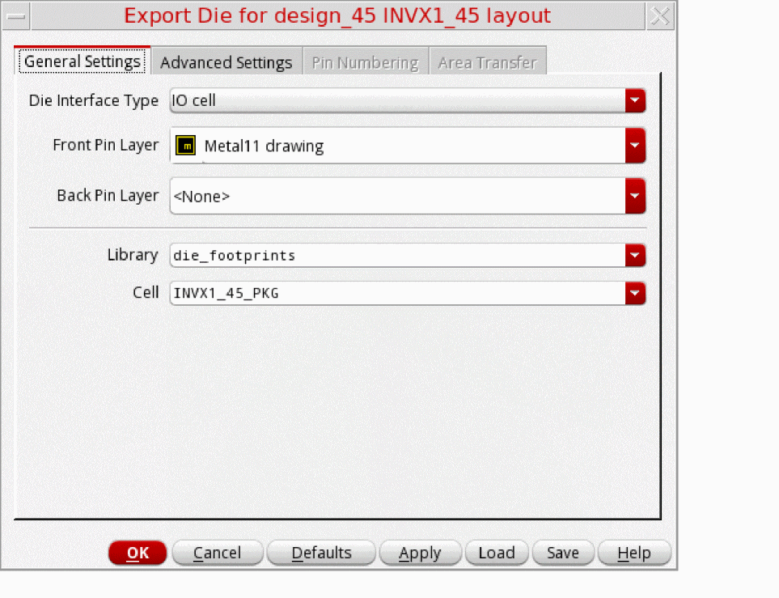
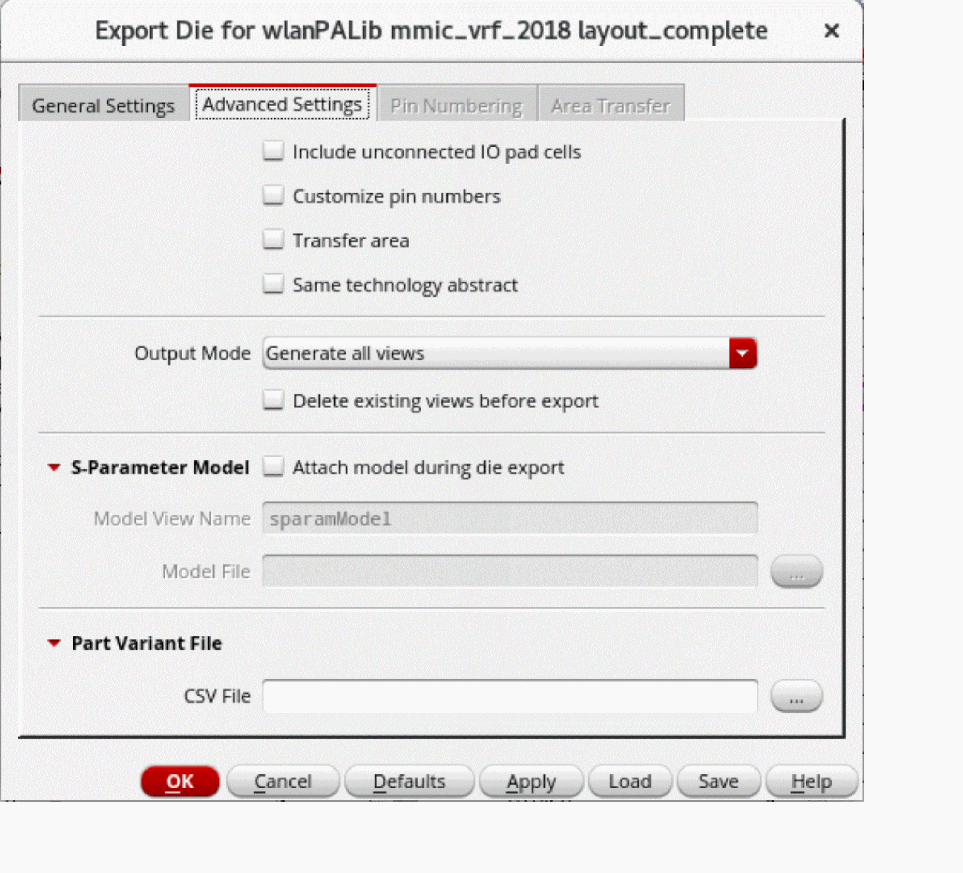
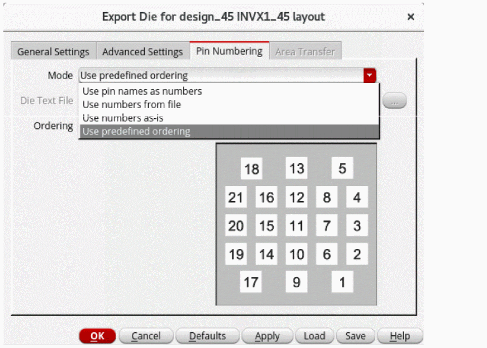
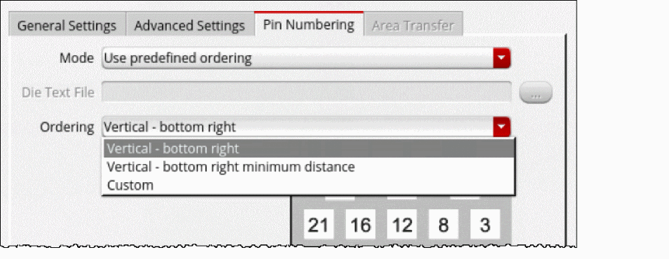
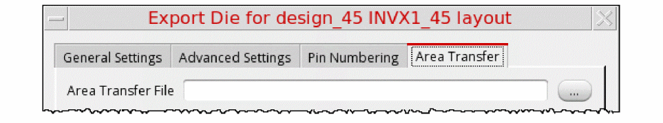

Exporting Dies
This is the step in the flow where the IC/die footprint is handed over to the package designer. By exporting the die, you can create technology-independent abstraction, which enables Edit-in-Concert, layout versus abstract (LVA) checks, and cross-fabric simulation using die schematic and model-based simulation for dies.
- Open the IC/die layout in Layout MXL.
-
Click Module – Export Die. The Export Die Form is displayed.
 - On the General Settings tab, specify the Front Pin Layer while defining the inputs for exporting the die. Most of the options are already set by default in the form.
-
On the Advanced Settings tab, specify the options for the die abstract.
 - Select Customize pin numbers to enable the Pin Numbering tab.
- Select Transfer area to enable the Area Transfer tab.
-
On the Pin Numbering tab, select the required option from the Mode drop-down list to generate the pin numbers for a die. The pin names in a footprint view are usually numbers, therefore, they are referred to as pin numbers.
 - Specify a value for Die Text File if the Use numbers from file option is selected for Mode.
-
Select the required option from the Ordering drop-down list if the Use predefined ordering option is selected for Mode.
 -
On the Area Transfer tab, specify an Area Transfer File that includes rules to add some additional shapes, such as logos, in an abstract view.
 - Click OK to export the die.
Edit Die Layout and Abstracts
After exporting the die, you can edit the die layouts and die abstract TILPs that are part of the same package by using the Edit-in-Concert feature. The signal types are also propagated from an IC layout to the die abstract during the die export.
Die export includes the following tasks when IO cell is chosen as the Die Interface Type in the Export Die form:
-
Extracts the IO Cells (bump/pads) from a given die/IC layout hierarchy and ensures that any duplicate pin names are made unique. For example, if there are two pins named as
VSS<1>, they are mapped asVSS_EXTRA0<1>andVSS_EXTRA1<1>. - Connects the front-end hierarchy of the exported die to the front end hierarchy of the other die. You can to access the IC schematic hierarchy when the die is instantiated in a package.
The summary report generated after die export contains information about whether the IO cells are connected, unconnected, or invalid based on the Front Pin Layer value. It also warns about any IO Cells that contain layers different from the Front Pin Layer value.
Die export includes the following tasks when Shape with overlapping label is chosen as the Die Interface Type in the Export Die form:
- Exports die for shape-based layouts.
- Accepts pin layer purpose pair and label layer purpose pair only for the front and back side.
- Extracts pins based on the shapes. In shape-based layouts, a shape is exported as a pin with a name the same as the text of the overlapping label. For a shape to be exported as a pin,
After exporting the die, a summary report is printed, which describes the number of labels found with and without overlapping shapes for the front side and back side layers.
Labels with overlapping shapes:
Labels without overlapping shapes:
Related Topic
Return to top